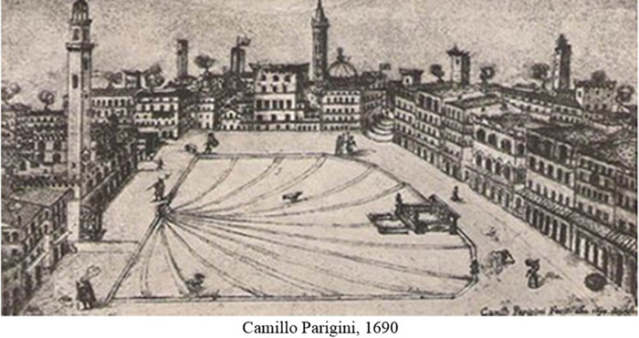

|
 |
2 luglio 1690
domenica
CHIOCCIOLA
|
- prima di iniziare la lettura, si consiglia di leggere l'introduzione -
Il Comucci, l'Elenco Generale del Comune e il manoscritto del S.Maria della Scala1 ci portano a conoscenza che questo Palio fu vinto dalla Chiocciola.
Definitiva conferma si trova nella missiva che il Sig. Galgano Bichi inviò a sua madre il 5 luglio: "Domenica corsero il Palio 12 Contrade, e lo vinse la Chiocciola a Porta S.Marco et io diedi la mossa e fù bella corsa"2.
L’assegnazione dei cavalli avvenne il 29 giugno, "giorno di S.Pietro" "al luogo solito fuor di Porta Camollia"3 e fra le partecipanti vi furono la Selva, come indicato dalla Compagnia di San Giovanni Battista sotto al Duomo4, la Tartuca che voleva essere presente con un cavallo messo a disposizione da due fratelli contradaioli5, l'Oca grazie ai 45 voti favorevoli con un solo contrario6 e la Giraffa, che fu finanziata dalla Compagnia del Suffragio con "lire otto"7.
A sancire l'evento esiste anche un raro sonetto dedicato al Sig. Alfonso Bandini8, "Protettore meritissimo", nel quale "La Contrada della Chiocciola Amante di Pace, si unisce con le due Contrade Tartuca, e Torre, e corroborata dalle medesime conseguisce la Vittoria del Palio9.
E' da ricordare che l'anno precedente la Chiocciola si era aggregata con la Tartuca e con la Torre.
Nel corso dei due secoli successivi l'alleanza fra Chiocciola e Tartuca fu costellata da episodi di rivalità soprattutto per ragioni inerenti al Palio, tanto che l'intesa si interruppe una prima volta fra il 1814 e il 1820 e poi, per un breve periodo, anche nel 1847.
Aspri diverbi sorsero fra le due Contrade nel periodo risorgimentale e alla fine del XIX secolo.
Era il preavviso dello scioglimento dell'aggregazione che avvenne definitivamente nel 1906, quando prevalse la rivalità. L'alleanza fra Chiocciola e Torre si sciolse invece nel 1972 e quella fra Tartuca e Torre fra il 1930 ed il 1934 a seguito della nascita del sodalizio del T.O.N.O. (acronimo formato dalle iniziali di Tartuca, Onda, Nicchio, Oca)10.

NOTE:
[1] ASS, Ospedale S.Maria della Scala 183, Ricordi e memorie 1453-1765, Tomo II, ms, c. 113
[2] ASS, Archivio Bichi Ruspoli 16, I, c.s.n.
[3] ASS, Biccherna 897, 24 giugno e 1° luglio, c. 16 e 16v
[4] ASS, Patrimonio Resti 852, c. 282v
[5] ACTa, Libro Primo Deliberazioni 1663-1702, c. 37v
[6] ACOc, Deliberazioni 1667-1745, libro C, c. 97
[7] ASS, Patrimonio Resti 2420, Compagnia del Suffragio, c.57
[8] Alfonso Bandini fu scelto come Giudice sopra la Mossa, in compagnia con Lattanzio Finetti, per il 2 luglio 1702.
[9] BCS, Stamperia del Pubblico 1688, fogli sciolti 46914
[10] Altre aggregazioni che si ebbero nel XX Secolo furono: “La piccola quadruplice” (Aquila, Drago, Lupa, Valdimontone) dal 1935 al 1939 e i “Tre fratelli” (Chiocciola, Bruco, Torre) dal 1934 al 1939.

ABBREVIAZIONI BIBLIOGRAFICHE


RIEPILOGO
VITTORIE
DAL 1633
AL 1691

|
|